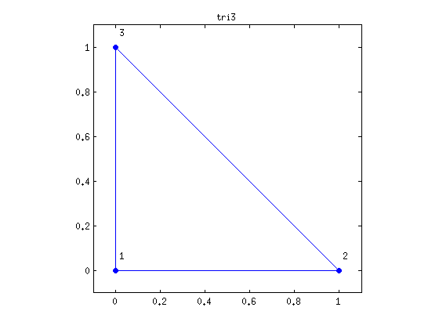
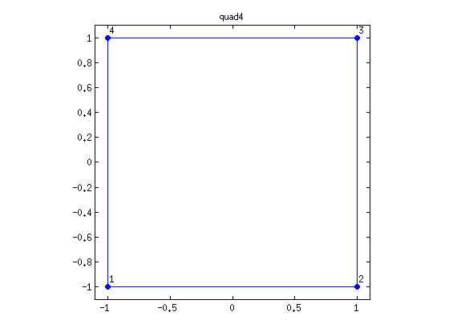
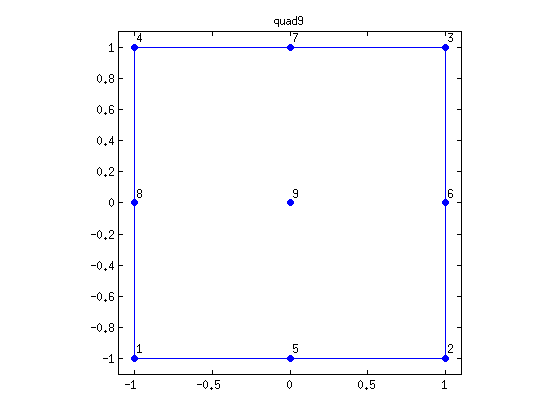
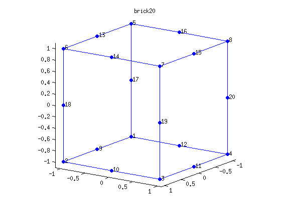

Contents
function reference_elements
3 node triangle
draw_reference_element('tri3');
 6 node triangle
draw_reference_element('tri6');

7 node triangle
draw_reference_element('tri7');

4 node quad
draw_reference_element('quad4');
 8 node quad
draw_reference_element('quad8');

9 node quad
draw_reference_element('quad9');
 4 node tetra
draw_reference_element('tet4');

10 node tetra
draw_reference_element('tet10');

14 node tetra
draw_reference_element('tet14');

15 node tetra
draw_reference_element('tet15');

8 node brick
draw_reference_element('brick8');

20 node brick
draw_reference_element('brick20');
 26 node brick
draw_reference_element('brick26');

27 node brick
draw_reference_element('brick27');

end
Definitions of reference elements
The below function includes definitions of the used elements, i.e., coordinates of nodes in reference elements and node order in element, edge, and face definitions. Notation:
* NODES: node coordinates in conventional order * EDGES: edge definitions using node ids, in conventional order * FACES: face definitions using node ids, in conventional order
function draw_reference_element(elemtype, NODES, EDGES) switch elemtype case 'tri3' NODES = [0 0; 1 0; 0 1]'; EDGES = [2 3; 3 1; 1 2 ]'; case 'tri6' NODES = [0 0; 1 0; 0 1; 0.5 0.5; 0 0.5; 0.5 0]'; EDGES = [2 4 3; 3 5 1; 1 6 2]'; case 'tri7' NODES = [0 0; 1 0; 0 1; 0.5 0.5; 0 0.5; 0.5 0]'; EDGES = [2 4 3; 3 5 1; 1 6 2]'; % coordinates of central node ncorners = 3; NODES = [NODES [... mean(NODES(1, 1:ncorners)); ... mean(NODES(2, 1:ncorners))]]; case 'quad4' NODES = [-1 -1; 1 -1; 1 1; -1 1; ]'; EDGES = [1 2; 2 3; 3 4; 4 1]'; case 'quad8' NODES = [-1 -1; 1 -1; 1 1; -1 1; 0 -1; 1 0; 0 1; -1 0]'; EDGES = [1 5 2; 2 6 3; 3 7 4; 4 8 1]'; case 'quad9' NODES = [-1 -1; 1 -1; 1 1; -1 1; 0 -1; 1 0; 0 1; -1 0]'; EDGES = [1 5 2; 2 6 3; 3 7 4; 4 8 1]'; % coordinates of central node ncorners = 4; NODES = [NODES [... mean(NODES(1, 1:ncorners)); ... mean(NODES(2, 1:ncorners))]]; case 'tet4' NODES = [0 0 0; 1 0 0; 0 1 0; 0 0 1]'; EDGES = [1 2; 2 3; 3 1; 1 4; 2 4; 3 4]'; FACES = [2 3 4; 1 4 3; 1 2 4; 1 3 2]'; case 'tet10' NODES = [0 0 0; 1 0 0; 0 1 0; 0 0 1; 0.5 0 0; 0.5 0.5 0; 0 0.5 0; 0 0 0.5; 0.5 0 0.5; 0 0.5 0.5]'; EDGES = [1 5 2; 2 6 3; 3 7 1; 1 8 4; 2 9 4; 3 10 4]'; FACES = [ 1 1 2 1 3 2 3 4 2 4 4 3 7 5 6 8 6 9 10 10 5 8 9 7]; case 'tet14' NODES = [0 0 0; 1 0 0; 0 1 0; 0 0 1; 0.5 0 0; 0.5 0.5 0; 0 0.5 0; 0 0 0.5; 0.5 0 0.5; 0 0.5 0.5;]'; EDGES = [1 5 2; 2 6 3; 3 7 1; 1 8 4; 2 9 4; 3 10 4]'; FACES = [ 1 1 2 1 3 2 3 4 2 4 4 3 7 5 6 8 6 9 10 10 5 8 9 7 11 12 13 14]; % coordinates of midface nodes NODES = [NODES [... mean(reshape(NODES(1, FACES(1:3,:)), 3, 4)); ... mean(reshape(NODES(2, FACES(1:3,:)), 3, 4));... mean(reshape(NODES(3, FACES(1:3,:)), 3, 4))]]; case 'tet15' NODES = [0 0 0; 1 0 0; 0 1 0; 0 0 1; 0.5 0 0; 0.5 0.5 0; 0 0.5 0; 0 0 0.5; 0.5 0 0.5; 0 0.5 0.5;]'; EDGES = [1 5 2; 2 6 3; 3 7 1; 1 8 4; 2 9 4; 3 10 4]'; FACES = [ 1 1 2 1 3 2 3 4 2 4 4 3 7 5 6 8 6 9 10 10 5 8 9 7 11 12 13 14]; % coordinates of midface nodes NODES = [NODES [... mean(reshape(NODES(1, FACES(1:3,:)), 3, 4)); ... mean(reshape(NODES(2, FACES(1:3,:)), 3, 4));... mean(reshape(NODES(3, FACES(1:3,:)), 3, 4))]]; % coordinates of central node ncorners = 4; NODES = [NODES [... mean(NODES(1, 1:ncorners)); ... mean(NODES(2, 1:ncorners));... mean(NODES(3, 1:ncorners))]]; case 'brick8' NODES = [-1 -1 -1; 1 -1 -1; 1 1 -1; -1 1 -1; -1 -1 1; 1 -1 1; 1 1 1; -1 1 1]'; EDGES = [1 2; 2 3; 3 4; 4 1; 5 6; 6 7; 7 8; 8 5; 1 5; 2 6; 3 7; 4 8]'; FACES = [1 2 3 4; 5 6 7 8; 1 2 6 5; 3 4 8 7; 1 4 8 5; 2 3 7 6]'; case 'brick20' NODES = [-1 -1 -1; 1 -1 -1; 1 1 -1; -1 1 -1; -1 -1 1; 1 -1 1; 1 1 1; -1 1 1;... 0 -1 -1; 1 0 -1; 0 1 -1; -1 0 -1; 0 -1 1; 1 0 1; 0 1 1; -1 0 1; ... -1 -1 0; 1 -1 0; 1 1 0; -1 1 0]'; EDGES = [1 9 2; 2 10 3; 3 11 4; 4 12 1; 5 13 6; 6 14 7; 7 15 8; 8 16 5; 1 17 5; 2 18 6; 3 19 7; 4 20 8]'; FACES = [... 1 5 1 3 1 2 2 6 2 4 4 3 3 7 6 8 8 7 4 8 5 7 5 6 9 13 9 11 12 10 10 14 18 20 20 19 11 15 13 15 16 14 12 16 17 19 17 18]; case 'brick26' NODES = [-1 -1 -1; 1 -1 -1; 1 1 -1; -1 1 -1; -1 -1 1; 1 -1 1; 1 1 1; -1 1 1;... 0 -1 -1; 1 0 -1; 0 1 -1; -1 0 -1; 0 -1 1; 1 0 1; 0 1 1; -1 0 1; ... -1 -1 0; 1 -1 0; 1 1 0; -1 1 0]'; EDGES = [1 9 2; 2 10 3; 3 11 4; 4 12 1; 5 13 6; 6 14 7; 7 15 8; 8 16 5; 1 17 5; 2 18 6; 3 19 7; 4 20 8]'; FACES = [... 1 5 1 3 1 2 2 6 2 4 4 3 3 7 6 8 8 7 4 8 5 7 5 6 9 13 9 11 12 10 10 14 18 20 20 19 11 15 13 15 16 14 12 16 17 19 17 18 21 22 23 24 25 26]; % coordinates of midface nodes NODES = [NODES [... mean(reshape(NODES(1, FACES(1:4,:)), 4, 6)); ... mean(reshape(NODES(2, FACES(1:4,:)), 4, 6));... mean(reshape(NODES(3, FACES(1:4,:)), 4, 6))]]; case 'brick27' NODES = [-1 -1 -1; 1 -1 -1; 1 1 -1; -1 1 -1; -1 -1 1; 1 -1 1; 1 1 1; -1 1 1;... 0 -1 -1; 1 0 -1; 0 1 -1; -1 0 -1; 0 -1 1; 1 0 1; 0 1 1; -1 0 1; ... -1 -1 0; 1 -1 0; 1 1 0; -1 1 0]'; EDGES = [1 9 2; 2 10 3; 3 11 4; 4 12 1; 5 13 6; 6 14 7; 7 15 8; 8 16 5; 1 17 5; 2 18 6; 3 19 7; 4 20 8]'; FACES = [... 1 5 1 3 1 2 2 6 2 4 4 3 3 7 6 8 8 7 4 8 5 7 5 6 9 13 9 11 12 10 10 14 18 20 20 19 11 15 13 15 16 14 12 16 17 19 17 18 21 22 23 24 25 26]; % coordinates of midface nodes NODES = [NODES [... mean(reshape(NODES(1, FACES(1:4,:)), 4, 6)); ... mean(reshape(NODES(2, FACES(1:4,:)), 4, 6));... mean(reshape(NODES(3, FACES(1:4,:)), 4, 6))]]; % coordinates of central node ncorners = 8; NODES = [NODES [... mean(NODES(1, 1:ncorners)); ... mean(NODES(2, 1:ncorners));... mean(NODES(3, 1:ncorners))]]; otherwise error(['element ' elemtype ' is not supported.']) end % plot clf; if size(NODES, 1)==2 plot(NODES(1, EDGES), NODES(2, EDGES), '-'); hold on; plot(NODES(1, :)', NODES(2, :)', 'o', 'MarkerSize', 6, 'MarkerFaceColor', 'blue'); minx = min(NODES(1,:)); maxx = max(NODES(1,:)); miny = min(NODES(2,:)); maxy = max(NODES(2,:)); axis square; axis([minx-0.1 maxx+0.1 miny-0.1 maxy+0.1]); for i=1:size(NODES, 2) text(NODES(1, i)+0.02, NODES(2, i)+0.07, num2str(i), 'FontSize', 14); end else hold on; for e=1:size(EDGES, 2) plot3(NODES(1, EDGES(:,e)), NODES(2, EDGES(:,e)), NODES(3, EDGES(:,e)), '-'); end plot3(NODES(1, :), NODES(2, :), NODES(3, :), 'o', 'MarkerSize', 6, 'MarkerFaceColor', 'blue'); minx = min(NODES(1,:)); maxx = max(NODES(1,:)); miny = min(NODES(2,:)); maxy = max(NODES(2,:)); minz = min(NODES(3,:)); maxz = max(NODES(3,:)); axis square; axis([minx-0.1 maxx+0.1 miny-0.1 maxy+0.1 minz-0.1 maxz+0.1 ]); for i=1:size(NODES, 2) text(NODES(1, i)+0.01, NODES(2, i)+0.05, NODES(3, i)+0.04, num2str(i), 'FontSize', 14); end view(125, 15); end title(elemtype, 'FontSize', 14); end